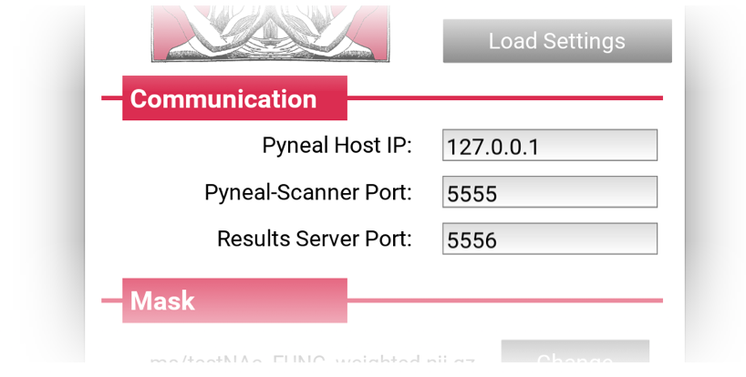
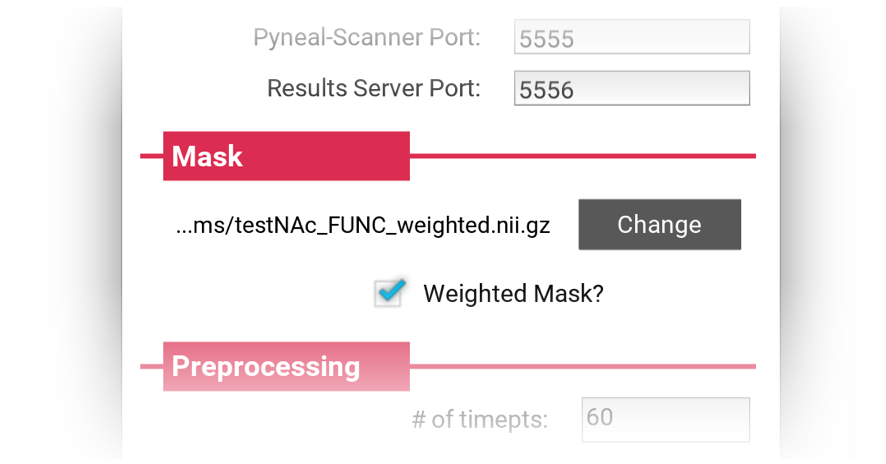
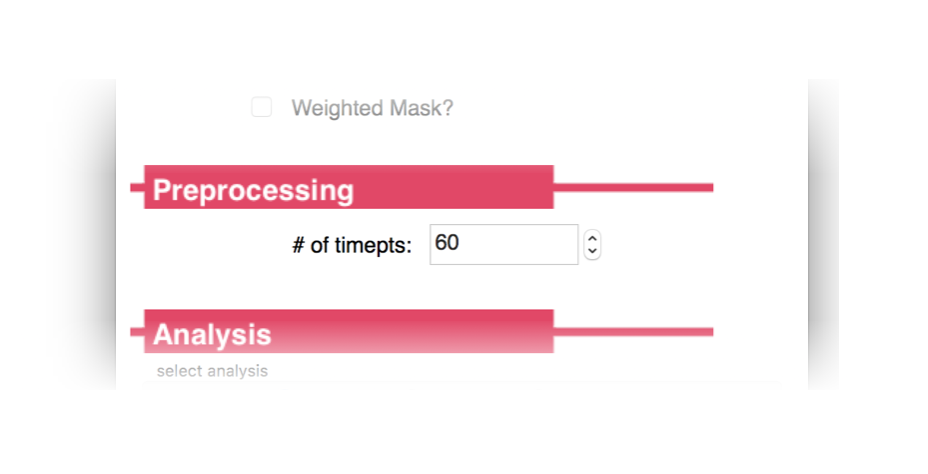
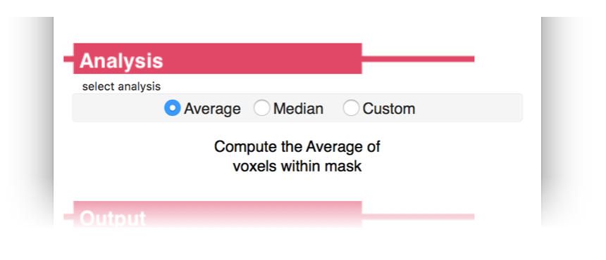
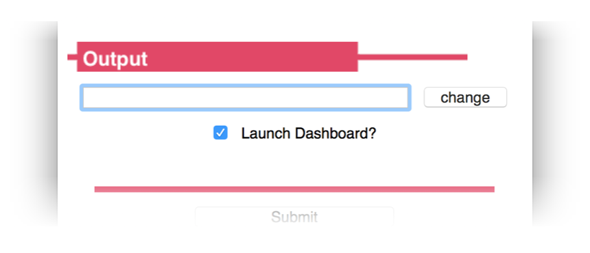
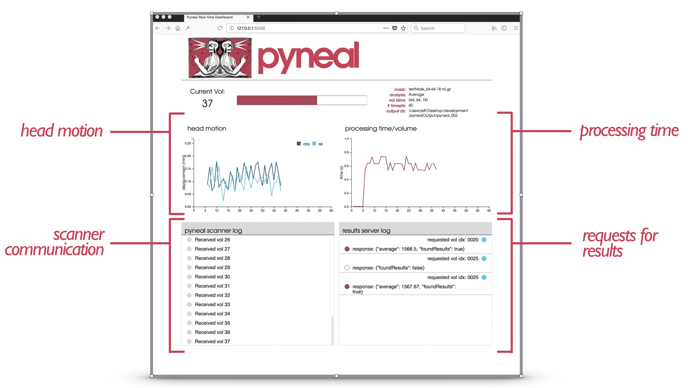

Pyneal¶

First step, make sure you've followed the instructions at setup: Pyneal to configure Pyneal to your environment.
Basic Usage¶
To launch Pyneal from the analysis computer, open a terminal and navigate to the pyneal directory. From there, type:
python3 pyneal.py
This will launch a GUI that will allow you to set up Pyneal for a particular real-time scan. Once you hit submit, a dashboard will appear (if selected in the GUI) that allows you to monitor the progress of your scan. Additional log messages will appear in the terminal throughout the scan.
See below for a more detailed description of how to prepare for a real-time scan, what's going on during a real-time scan, and what type of data is available after a real-time scan
Preparing for a real-time scan¶
Network settings¶
By this point, if you have followed the setup instructions for both Pyneal Scanner and Pyneal you will have delegated one machine to be the scanner computer and one machine to be the analysis computer. It is imperative that Pyneal Scanner and Pyneal can communicate with one another during a scan. That is, the scanner computer must be able to connect to the analysis computer over an available network port.
Different scanning environments will have different configurations (see setup: setting up your network for more details). Regardless of your setup, make sure you know the IP address you will use for Pyneal, as well as the port numbers to use for communication with Pyneal Scanner and any remote End User.
Creating Masks¶
Pyneal requires the user to supply a mask that will specify which voxels to include during the real-time analysis.
This mask can take any form you want, with the caveat that it must be in the same space (i.e. voxel size, slice dimensions, and orientation) as the incoming functional data throughout the real-time scan. One way to ensure this would to collect a short localizer scan at the beginning of the session that has the desired scan parameters, and use this data to create/register/align your mask for the subsequent real-time runs.
Examples:
-
Mask from functional ROI: You could include a mask that represents voxels with significant task-induced activation from the current subject. To do so, include a quick localizer task at the beginning of your session that you can access offline (for instance, by using the
getSeries.pytool in Pyneal Scanner) and analyze. Threshold and/or binarize the resulting statistical maps as appropriate, and create a funtional ROI mask file. -
Mask from anatomical ROI: You can create a subject-specific anatomical ROI mask by transforming a preselected MNI space mask to the participant's functional space. Pyneal includes an automated tool to assist in this process. See Additional Tools: Creating Masks. Your chosen source MNI mask can be a binary anatomical mask or a weighted probablistic mask. When you load the functional space mask into Pyneal you will have the option of preserving voxel weights.
Choosing Analyses¶
Prior to beginning a real-time project, determine what type of analysis is most appropriate to your project, and whether the built-in analysis routines will suffice or whether it'd be more appropriate to use a custom analysis script.
Pyneal has built-in analysis tools that can compute simple descriptive summaries (e.g. mean, median) from a single ROI. However, by using a custom analysis script, you can develop unique and complex analyses, targeting one or more ROIs, that will execute on every incoming volume during the scan.
See Additional Tools: Customized Analyses
Running a real-time scan¶
To launch Pyneal from the analysis computer, open the command line and navigate to the pyneal directory. From the pyneal directory, type:
python pyneal.py
The GUI will appear, allowing you to enter the appropriate settings for your environment/session:
Set-up GUI¶

Launching the GUI will load the settings from previous run. For running multiple scans in the same session, you may not need to change any settings after the first scan.
If you do need to change settings, you can do so manually via each field in the GUI, or you can click Load Settings to load a custom .yaml configuration file. A custom settings file must contain one or more of the required configuration key:value pairs; see Setup: Pyneal for more details on the Configuration Keys. Any configuration keys not specified in the custom settings file will be set using default values.
The GUI presents a number of options that can be customized to your project/enviroment:
Communication¶

The Communication panel is where you specify the network settings for communication between Pyneal Scanner, Pyneal, and any remote End User.
- Pyneal Host IP: The IP address of the machine running Pyneal (i.e. the analysis machine). This is the IP address that Pyneal Scanner will try to connect to, as well as any remote End User that is making requests for results.
- Pyneal-Scanner Port: The port number over which Pyneal will be listening for incoming data from Pyneal Scanner.
- Results Server Port: The port number that Pyneal will use to set up the Results Server. Remote machines that wish to retrieve real-time analysis output during a scan can send requests over this port number.
Mask¶

Specify the path to mask file (Nifti - .nii/.nii.gz) to be used during real-time analysis. During the analysis stage, each incoming 3D volume will be masked to remove non-relevant voxels. The mask must match the dimensions and orientation of incoming functional data (see Creating Masks for Real-time Analysis).
- If Weighted Mask? is checked, the voxel values will be used as weights and passed along to the analysis stage.
- For a Custom analysis in which you want to use 2 or more ROIs, you should set your custom analysis script to load the desired ROIs. In that situation, you should choose a mask file here that represents a whole brain mask (see Creating Masks for Real-time Analysis).
Preprocessing¶

Specify how many timepoints will be in the upcoming series. The other dimensions of the dataset (i.e. slice dimensions, number of slices per vol) will be determined automatically from the incoming data.
Analysis¶

Choose the analyses you want to carry out during the real-time run
- Average: Built-in analysis routine. Compute the mean activation over all voxels in the Mask specified above. If the
Weighted Mask?option is selected on the Mask panel, a weighted average will be calculated, using voxel values as weights. - Median: Built-in analysis routine. Compute the median activation value over all voxels in the Mask specifed above. If the
Weighted Mask?option is selected on the Mask panel, a weighted mean will be calculated, using voxel values as weights. (see weightedstats for algorithm). - Custom: Load a custom analysis script. The analysis algorithms specified in the script will be executed on every incoming timepoint during the scan. (see Custom Analysis Scripts)
Output¶

Specify a path to an output directory for the current session. Within this output directory, the results and log files for each new series will be written to unique subdirectories, starting with pyneal_001 for the first series and named sequentially thereafter.
- Launch Dashboard?: Option for whether to present a dashboard during the real-time scan or not. If selected, the dashboard will launch automatically upon submission. However, if you happen to close it for any reason, you can access it by pointing a web browser to
127.0.0.1:5558(Note:5558is thedashboardClientPortnumber. To confirm the correct port, check the settings that are printed to the terminal once you hitSubmitfrom the setup GUI (see Command line output below). For more information on using the Dashboard, see Dashboard below).
Command line output¶
Once you hit submit, the command line will print a message showing you where log files for the current series will be stored, as well as all of the configuration settings for this series:
Logs written to: /path/to/outputDir/pyneal_001/pynealLog.log
MainThread - Setting: analysisChoice: Average
MainThread - Setting: dashboardClientPort: 5558
MainThread - Setting: dashboardPort: 5557
MainThread - Setting: launchDashboard: True
MainThread - Setting: maskFile: /path/to/maskFile.nii.gz
MainThread - Setting: maskIsWeighted: False
MainThread - Setting: numTimepts: 60
MainThread - Setting: outputPath: /path/to/outputDir
MainThread - Setting: pynealHost: 127.0.0.1
MainThread - Setting: pynealScannerPort: 5555
MainThread - Setting: resultsServerPort: 5556
MainThread - Setting: seriesOutputDir: /path/to/outputDir/pyneal_001
At the end of the message, you'll see a status indicator for the various subcomponents of Pyneal:
MainThread - ScanReceiver Server alive and listening....
Waiting for connection from pyneal_scanner
MainThread - Results Server alive and listening....
If everything is working properly, it'll say that both the ScanReceiver Server and Results Server are alive and listening. (for more information about what these components are doing, see Pyneal Subcomponents below).
You should also see a message indicating that Pyneal is waiting to connect to Pyneal Scanner. Once you launch Pyneal Scanner, this message will update to:
Received message: hello from pyneal_scanner
Throughout the scan, the terminal will update with status and log messages reporting on-going processes. In addition to the command line output, you can monitor the status of the scan from the web-based dashboard.
Dashboard¶

The dashboard will launch automatically, but if you happen to close the window you can relaunch it at any time during the scan by opening a webbrowser and entering the URL 127.0.0.1:<dashboardClientPort>, where <dashboardClientPort> can be found from series configuration settings that are printed to the command line. For example, using the settings from above, the URL would be: 127.0.0.1:5558
The dashboard contains:
- progress bar indicating the % completed of the current scan
- head motion plot showing relative (to ref volume) and absolute displacement (in mm)
- scanner communication log showing volume indices as they arrive from the scanner
- processing time plot showing processing time per volume (in sec)
- request log showing incoming requests for results and each corresponding reply
After a real-time scan¶
After the scan has completed, the seriesOutputDir will contain the folling output files:
pynealLog.log- detailed log messages from the current scanresults.json- JSON formatted file containg all of the analysis results from the current scanreceivedFunc.nii.gz- nifti formatted 4D file containing the series data itself, as received by Pyneal, from the current scan